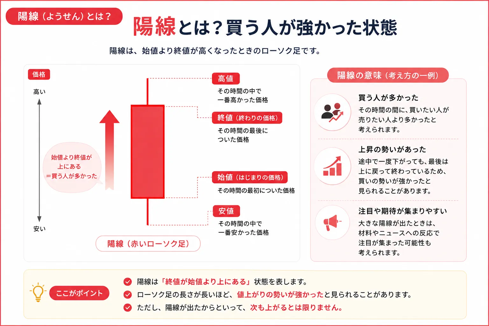
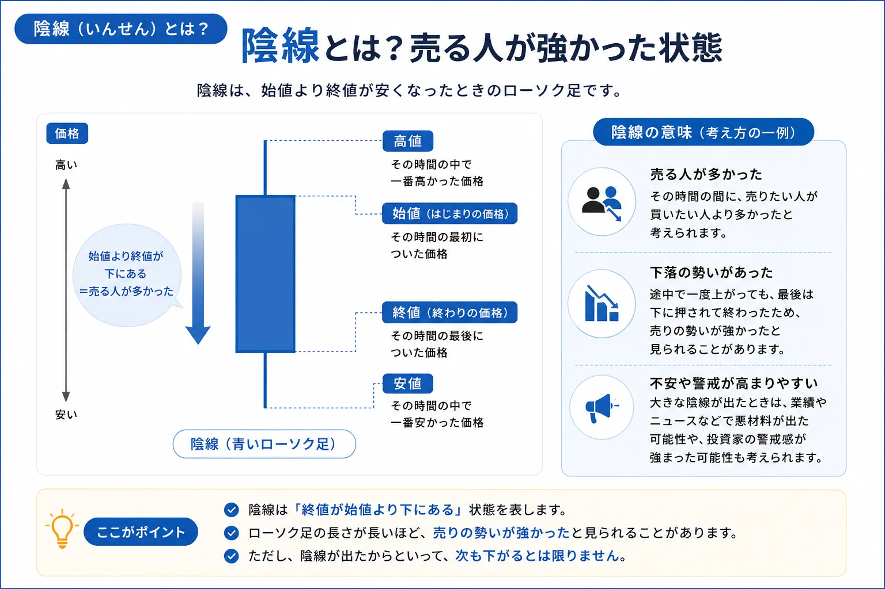
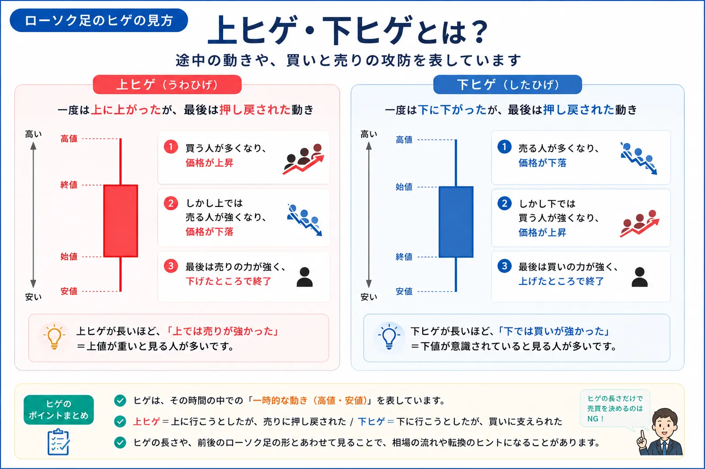
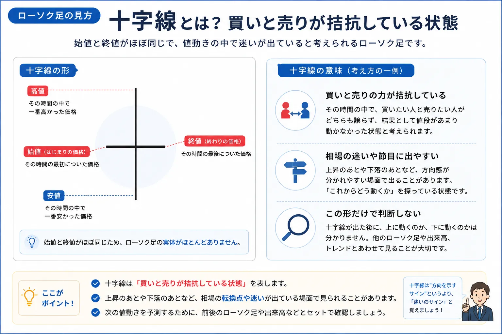
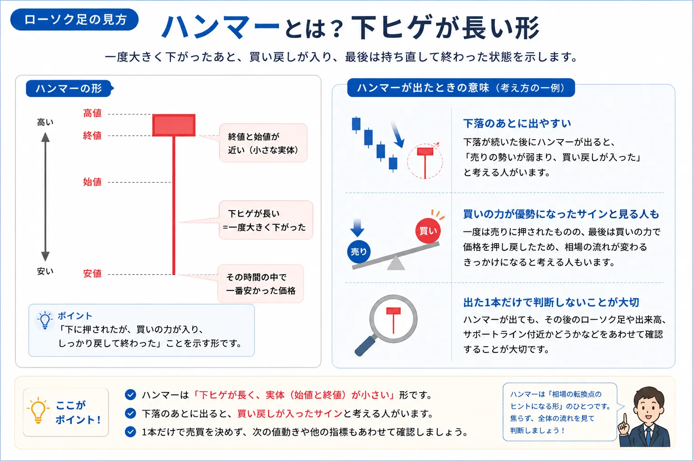
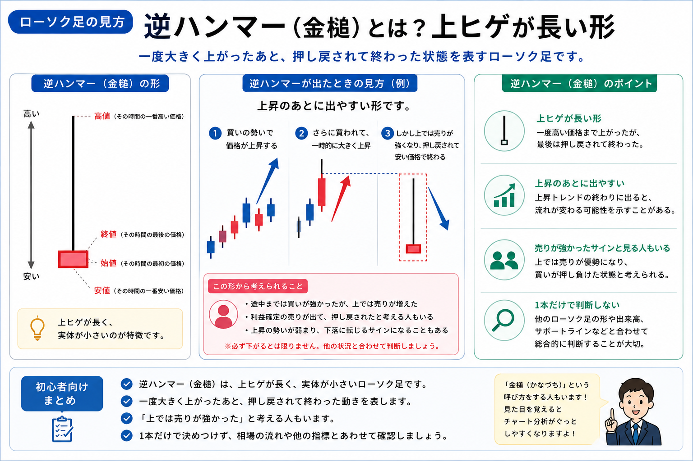
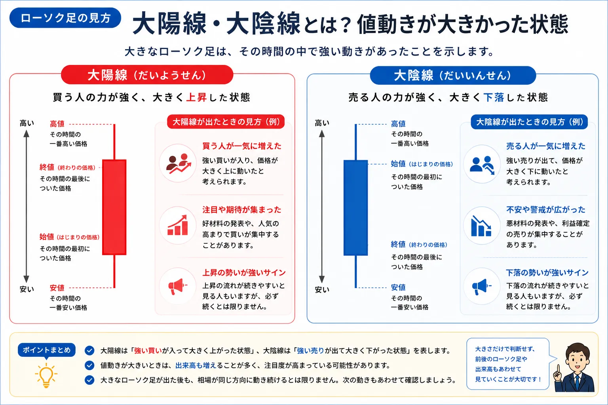
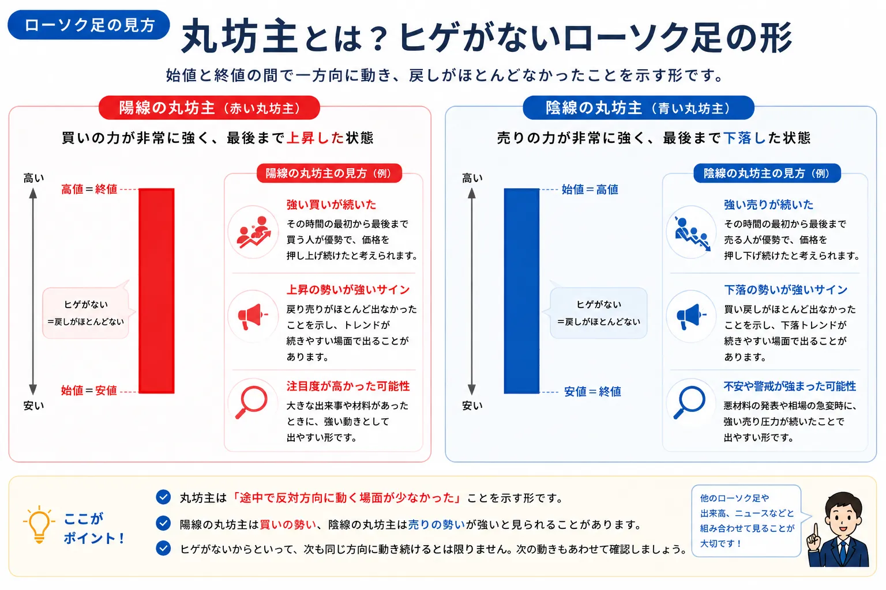

ローソク足の見方を初心者向けに解説｜陽線・陰線・ヒゲの意味
ローソク足とは？チャートの値動きを一本で表すもの

- ローソク足は、一定期間の値動きを一本で表したものです
- 株やFXのチャートで、価格が上がったのか下がったのかを確認しやすくなります
- 最初からすべての形を覚える必要はありません
- 初心者は、陽線・陰線・ヒゲの3つから見ると整理しやすいです
株やFXのチャートを開くと、赤や青の四角い形がたくさん並んでいます。
この一本一本がローソク足です。ローソク足を見ると、その時間の中で価格がどこから始まり、どこまで上がり、どこまで下がり、最後にどこで終わったのかを確認できます。
難しく感じるかもしれませんが、最初から細かいパターンをすべて覚える必要はありません。まずは、買う人が多かったのか、売る人が多かったのか、途中で押し戻されたのかを読むための図だと考えると分かりやすくなります。
ローソク足は「結果」ではなく「途中の動き」も見られる
たとえば、同じ価格で終わったとしても、途中で大きく上がってから戻されたのか、一度大きく下がってから戻したのかで、チャートの印象は変わります。
ローソク足は、単に上がった・下がっただけでなく、その途中でどのような売買があったのかをイメージするために使われます。
ただし、ローソク足は未来を確実に当てるものではありません。あくまでチャート画面を読みやすくするための基本として使いましょう。
赤のローソク足・陽線の見方

- 陽線は、終値が始値より高いローソク足です
- その期間では、買う人の力が強かったと見られることがあります
- 本体が長いほど、価格が大きく上がったことを表します
- ただし、陽線が出たから次も必ず上がるとは限りません
陽線とは、一定期間の最後の価格である終値が、最初の価格である始値よりも高くなったローソク足です。
かんたんに言えば、その期間は、買いたい人の力が売りたい人の力を上回ったように見える形です。株やFXのチャートでは、赤や白などで表示されることがあります。投資ポータル.jpでは、初心者が見分けやすいように赤のローソク足として説明します。
陽線の本体が長い場合は、始まった価格から大きく上がって終わったことを表します。そのため、買いの勢いが強かったと見られることがあります。
陽線は「買う人が多かった時間」と考えると分かりやすい
始値・終値という言葉だけで覚えると難しく感じますが、陽線は「その時間の中で、最終的に買う人が優勢だった」と考えると理解しやすくなります。
ただし、1本の陽線だけで判断するのではなく、前後のローソク足やチャート全体の流れもあわせて見ることが大切です。
青のローソク足・陰線の見方

- 陰線は、終値が始値より低いローソク足です
- その期間では、売る人の力が強かったと見られることがあります
- 本体が長いほど、価格が大きく下がったことを表します
- 陰線が出たからといって、すぐに慌てる必要はありません
陰線とは、終値が始値よりも低くなったローソク足です。
かんたんに言えば、その期間は、売りたい人の力が買いたい人の力を上回ったように見える形です。チャート設定によって色は異なりますが、青や黒などで表示されることがあります。投資ポータル.jpでは、初心者が見分けやすいように青のローソク足として説明します。
陰線の本体が長い場合は、始まった価格から大きく下がって終わったことを表します。そのため、売りの勢いが強かったと見られることがあります。
陰線は「売る人が多かった時間」と考える
陰線を見ると不安になりやすいですが、1本の陰線だけで今後の動きを決めつける必要はありません。
短い時間足では小さな陰線がよく出ますし、上昇している途中でも一時的に陰線が出ることはあります。
初心者は、陰線を「その時間は売る人が多かった」と読むところから始めると、チャートへの苦手意識が減りやすくなります。
ヒゲの見方｜上ヒゲと下ヒゲで途中の動きを読む

- ヒゲは、ローソク足の上下に伸びる細い線です
- 上ヒゲは、一度高くなったあと押し戻された動きを表します
- 下ヒゲは、一度安くなったあと戻された動きを表します
- ヒゲは、売買のせめぎ合いを読む手がかりになります
ローソク足の上下に伸びる細い線をヒゲと呼びます。
四角い本体だけを見ると、始値と終値の関係しか分かりませんが、ヒゲを見ると、その期間中にどこまで高くなったか、どこまで安くなったかが分かります。
上に伸びる線が上ヒゲです。上ヒゲが長い場合は、一度は高い価格まで上がったものの、最後は押し戻された形です。上の価格帯で売りたい人が多かった、または買いの勢いが弱まったと見られることがあります。
下に伸びる線が下ヒゲです。下ヒゲが長い場合は、一度は安い価格まで下がったものの、最後は戻された形です。下の価格帯で買いたい人がいた、または売りの勢いが弱まったと見られることがあります。
ヒゲは「途中で押し戻された跡」
上ヒゲや下ヒゲは、価格が一方向に動いたあと、反対方向に押し戻された跡として見ると分かりやすいです。
ただし、ヒゲが長いから必ず反転するという意味ではありません。相場全体の流れやニュース、出来高などと一緒に見ることで、意味を整理しやすくなります。
十字線とは？買いと売りが迷っているように見える形

- 十字線は、始値と終値がほぼ同じ位置になったローソク足です
- 買いと売りの力が近かったと見られることがあります
- 相場の迷いとして説明されることもあります
- 十字線だけで上がる・下がると判断するのは避けましょう
十字線とは、始値と終値がほぼ同じ価格になったローソク足です。
本体がとても短く、上下にヒゲが出ているため、十字のような形に見えます。
十字線は、途中で上がったり下がったりしたものの、最後は始まった価格に近いところで終わった形です。そのため、買う人と売る人の力が近かった、または相場が迷っている状態として見られることがあります。
ただし、十字線が出たから必ず流れが変わるわけではありません。上昇中に出る十字線、下落中に出る十字線、横ばいで出る十字線では、見方が変わることがあります。
ハンマーとは？下ヒゲが長いローソク足

- ハンマーは、下ヒゲが長く本体が小さいローソク足です
- 一度大きく下がったあと、価格が戻された形です
- 下の価格帯で買い戻しが入ったと見られることがあります
- 初心者は「下げたけど戻した形」と覚えると分かりやすいです
ハンマーは、下ヒゲが長く、ローソク足の本体が上のほうにある形です。見た目がハンマーのように見えることから、このように呼ばれます。
この形は、一度大きく下がったものの、最後はある程度戻して終わったことを表します。つまり、安くなったところで買いたい人が出てきた、または売りの勢いが弱まったと見られることがあります。
特に下落が続いたあとにハンマーのような形が出ると、売りが弱まってきたのではないかと考える人もいます。
ハンマーだけで判断しないことが大切
ハンマーは初心者にも覚えやすい形ですが、これが出たから必ず上がるという意味ではありません。
下ヒゲが長くても、その後に再び下がることはあります。ハンマーは「一度下げたけれど戻した形」として、チャートを読むための材料のひとつとして見ましょう。
逆ハンマー（金槌）とは？上ヒゲが長い形

- 逆ハンマーは、上ヒゲが長いローソク足です
- 一度大きく上がったあと、押し戻された動きを表します
- 「上では売りが強かった」と考える人もいます
- 1本だけで判断せず、全体の流れとあわせて見ることが大切です
逆ハンマー（金槌）とは、上ヒゲが長く、実体が小さいローソク足のことです。
その時間の中で一度大きく上昇したものの、
最後は押し戻されて終わった状態を表しています。
そのため、
「途中までは買いが強かったが、上では売りが増えた」
と考える人もいます。
特に、上昇したあとに出た場合は、
「利益確定の売りが増えているのでは？」
と見る人もいます。
上ヒゲが長い＝途中で押し戻された
逆ハンマーの特徴は、長い上ヒゲです。
これは、
一度高い価格まで上がったものの、
最後はその価格を維持できなかったことを示しています。
ただし、
逆ハンマーが出たからといって、
必ず下がるとは限りません。
他のローソク足、
出来高、
トレンド、
サポートラインなどとあわせて確認することが大切です。
初心者向けポイント
- 上ヒゲが長い形
- 途中では上昇した
- 最後は押し戻された
- 「上では売りが強かった」と見る人もいる
※ローソク足は「絶対に未来を当てるサイン」ではありません。 全体の流れとセットで見ることが大切です。
大陽線・大陰線とは？大きく動いたローソク足

- 大陽線は、本体が長い陽線です
- 大陰線は、本体が長い陰線です
- 価格が大きく動いた日や時間に出ることがあります
- ニュースや決算、重要な発表が関係する場合もあります
大陽線とは、本体が長い陽線のことです。始値から終値まで大きく上がっているため、買いの勢いが強かったと見られることがあります。
反対に、大陰線とは、本体が長い陰線のことです。始値から終値まで大きく下がっているため、売りの勢いが強かったと見られることがあります。
大陽線や大陰線は、決算発表、経済指標、ニュース、相場全体の急変などで出ることがあります。大きなローソク足が出たときは、形だけでなく、なぜ大きく動いたのかも確認すると理解しやすくなります。
丸坊主とは？ヒゲがほとんどないローソク足

- 丸坊主は、ヒゲがほとんどないローソク足です
- 陽線の丸坊主は、強く買われた形として見られることがあります
- 陰線の丸坊主は、強く売られた形として見られることがあります
- 一方向に動いたように見えるため、勢いを確認する材料になります
丸坊主とは、上下のヒゲがほとんどないローソク足です。
陽線の丸坊主であれば、始まってから終わりまで買いが優勢だったように見える形です。陰線の丸坊主であれば、始まってから終わりまで売りが優勢だったように見える形です。
ヒゲが少ないということは、途中で大きく押し戻される場面が少なかったと考えられます。そのため、一方向の勢いが出ているローソク足として見られることがあります。
ただし、丸坊主が出たからといって、次のローソク足も同じ方向に動くとは限りません。特に大きく動いたあとは、利益確定や反動で逆方向に動くこともあります。
初心者が最初に覚えたいローソク足の見方まとめ
- 陽線は、買う人が優勢だったと見られることがあります
- 陰線は、売る人が優勢だったと見られることがあります
- 上ヒゲは、上がったあと押し戻された動きです
- 下ヒゲは、下がったあと戻された動きです
- 十字線は、買いと売りが迷っている形として見られることがあります
| 形 | 見た目 | 読み方の目安 | 初心者向けの覚え方 |
|---|---|---|---|
| 陽線 | 赤い本体 | 終値が始値より高い | 買う人が多かった時間 |
| 陰線 | 青い本体 | 終値が始値より低い | 売る人が多かった時間 |
| 上ヒゲ | 上に細い線 | 上がったあと押し戻された | 上では売りたい人がいた |
| 下ヒゲ | 下に細い線 | 下がったあと戻された | 下では買いたい人がいた |
| 十字線 | 本体が短い | 始値と終値が近い | 買いと売りが迷った形 |
| ハンマー | 長い下ヒゲ | 下げたあと戻した | 売られたが買い戻された形 |
| 丸坊主 | ヒゲが少ない | 一方向に動いた | 勢いが出た形 |
ローソク足は種類が多く、調べ始めるとたくさんの名前が出てきます。
しかし、初心者の段階では、すべてを覚える必要はありません。まずは、陽線・陰線・ヒゲ・十字線・ハンマーのような基本形だけでも十分です。
大切なのは、形の名前を暗記することではなく、その時間に買う人と売る人がどのように動いたのかをイメージすることです。
ローソク足を見るときに初心者が注意したいこと
- ローソク足の形だけで売買を決めつけない
- 「この形が出たら必ず上がる」と考えない
- 前後のローソク足やチャート全体の流れも見る
- 株なら業績やニュース、FXなら経済指標や金利も確認する
ローソク足は、チャートを読むための基本です。
ただし、ローソク足だけで将来の値動きを正確に予測することはできません。
たとえば、長い下ヒゲが出ても、その後に必ず上がるとは限りません。大陽線が出ても、次の日に利益確定の売りが出ることもあります。
反対に、大陰線が出ても、材料によってはすぐに反発する場合もあります。
そのため、ローソク足は「売買の勢いを読むための材料」として使い、チャート全体の流れ、出来高、ニュース、自分の投資目的とあわせて確認することが大切です。
最初はここだけ見ればOK
- 赤いローソク足が多いか、青いローソク足が多いか
- ローソク足の本体が長いか短いか
- 上ヒゲと下ヒゲのどちらが長いか
- 直近で大きく動いたローソク足があるか
※ローソク足の見方に絶対の正解はありません。最初は「チャート画面を読めるようになるための基本」として、少しずつ慣れていきましょう。
ローソク足の見方とあわせて読みたい関連記事

ローソク足の基本を理解したら、株やFXのチャート全体の見方もあわせて確認しておくと、チャート画面をより整理しやすくなります。
以下の関連記事も参考にしてみてください。


証券口座やFX口座の比較を見ておきたい方へ
ローソク足は、株やFXのチャート画面でよく使われる基本表示です。実際に取引画面を見る前に、各サービスの使いやすさや取扱商品も確認しておくと、自分に合う環境を選びやすくなります。


一般ユーザー目線の体験でおすすめの会社をご紹介

よくある質問（FAQ）

-
Q. ローソク足とは何ですか？
ローソク足とは、一定期間の始値・高値・安値・終値を一本の形で表したものです。株やFXのチャートで、価格が上がったのか下がったのか、どのくらい動いたのかを確認しやすくなります。 -
Q. 陽線と陰線の違いは何ですか？
陽線は終値が始値より高くなったローソク足で、買う人が多かった状態として見られることがあります。陰線は終値が始値より低くなったローソク足で、売る人が多かった状態として見られることがあります。 -
Q. 上ヒゲが長いローソク足はどう見ればいいですか？
上ヒゲが長いローソク足は、一度高くなったものの最後は押し戻された形です。上の価格帯で売りたい人が多かった、または買いの勢いが弱まったと見られることがあります。 -
Q. 下ヒゲが長いローソク足はどう見ればいいですか？
下ヒゲが長いローソク足は、一度安くなったものの最後は戻された形です。下の価格帯で買いたい人がいた、または売りの勢いが弱まったと見られることがあります。 -
Q. ローソク足だけで売買判断してもよいですか？
ローソク足はチャートを読むための基本ですが、ローソク足だけで売買を決めるのは注意が必要です。相場全体、ニュース、出来高、投資目的などもあわせて確認することが大切です。
ご利用にあたっての注意事項
本記事は情報提供を目的としており、投資の勧誘を目的としたものではありません。株式・ETF・投資信託・外国証券・FX・暗号資産等の取引は元本保証がなく、価格変動や為替変動等により損失が生じる場合があります。ローソク足やチャート分析にはさまざまな考え方があり、銘柄や相場環境、投資目的によって見方は異なります。取引開始前に、契約締結前交付書面や商品説明書、目論見書等を必ずご確認のうえ、ご自身の判断と責任でお取引ください。
最終更新日：2026-05-18